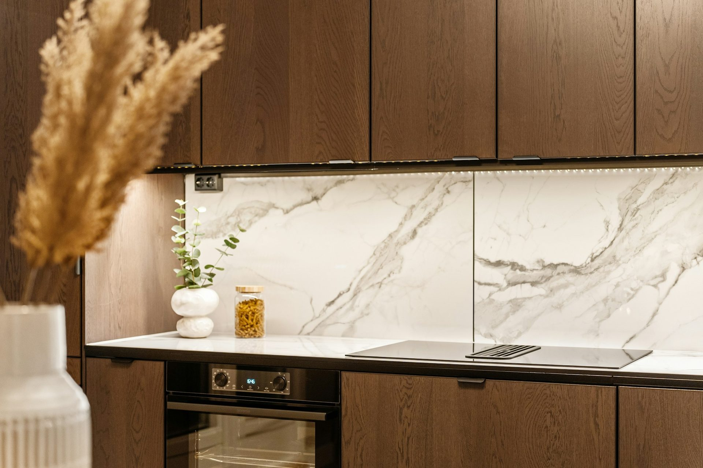
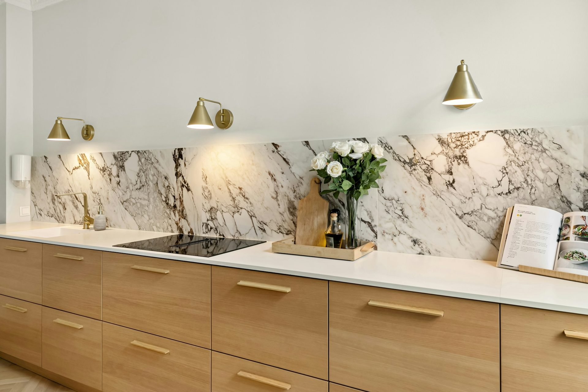
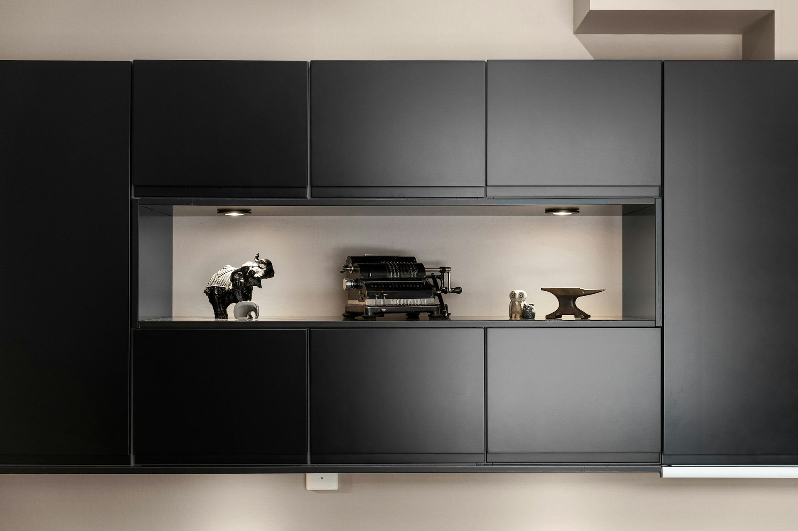
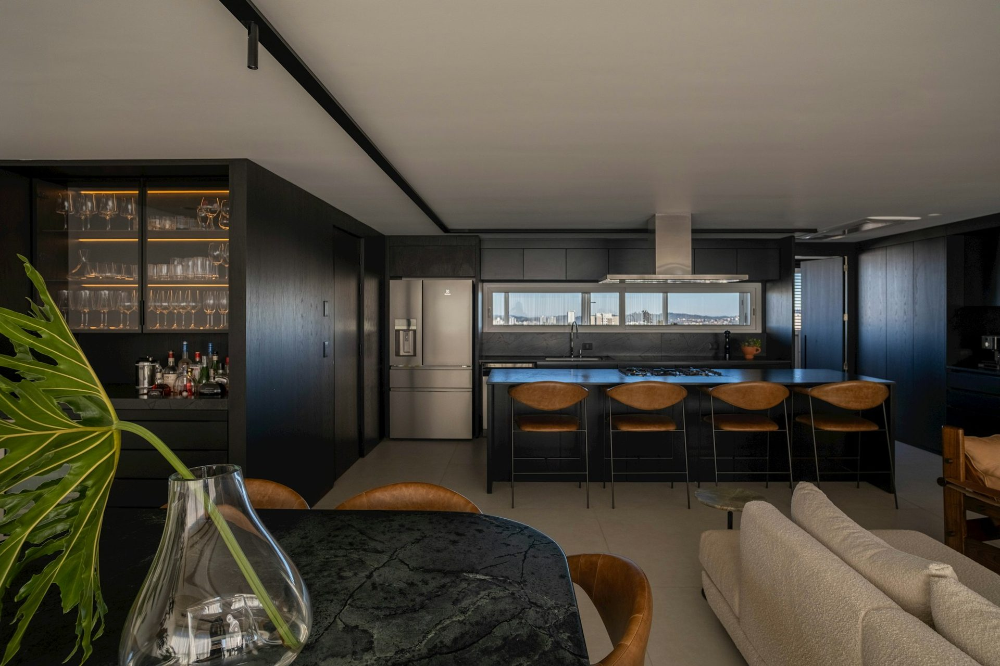
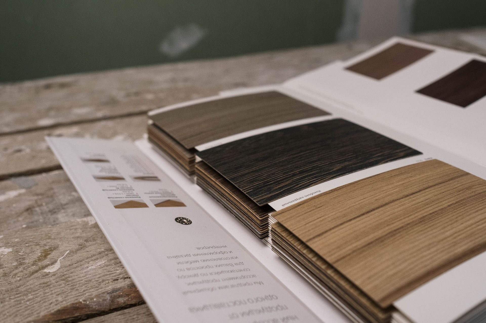

Under-cabinet
lighting, explained.
The ceiling light is behind you when you work at the bench, so your own body shadows the surface. Under-cabinet lighting is what actually lights the work.
The short answer
Under-cabinet lighting is fitted to the underside of overhead cabinets to light the benchtop directly. It matters because a ceiling downlight sits behind you when you stand at the bench, so you work in your own shadow. The usual options are a continuous LED strip in an aluminium channel, or individual puck lights. Both need power run before the cabinets are fixed, which makes this an electrical decision taken at the drawing stage, not a later addition.

Strip versus puck
A strip in an aluminium channel gives even light along the whole bench and, in a channel with a diffuser, no visible hot spots or reflections in a gloss splashback. Puck lights are cheaper and simpler but throw pools of light with dark gaps between, and they reflect as bright dots in any shiny surface behind the bench. For a stone or glass splashback the channel is worth the difference.
Warm or cool
Colour temperature changes how food and finishes look. Warmer light flatters timber and warm stone; cooler light reads cleaner and shows detail. What matters most is matching it to the other lighting in the room @EM@ a warm ceiling and a cool bench look like a mistake.
Where the driver goes
LED strip needs a transformer or driver, and it has to live somewhere accessible @EM@ inside an overhead cabinet, in a bulkhead, or in the pantry. If it is buried behind a fixed panel, replacing it later means taking cabinetry apart. Decide its location on the drawing.
What your electrician needs
Power at the right height and position before the overheads are fixed, plus a switch location. All of that is marked on the dimensioned service drawing that ships with every order, alongside the waste and water points. Our install guide covers when the electrician does rough-in versus fit-off.
Sizes, hardware and services
More in this series: Standard cabinet sizes · Bench height · Hinge overlay · Benchtop thickness · Drawers vs cupboards · Appliance cut-outs · Undermount vs topmount · Soft close vs push to open · Runner load ratings · The work triangle · Power point placement.
Frequently asked
Common questions
If your question is not here, call the studio. We would rather talk it through than have you guess.
Ask us directly →Is under-cabinet lighting worth it?
Yes, because a ceiling light puts your own shadow on the bench where you work. It is one of the cheapest improvements to how a kitchen actually functions.
Strip or puck lights?
Strip in an aluminium channel gives even light and no reflected hot spots. Puck lights are cheaper but throw pools with dark gaps, and they reflect as bright dots in a gloss splashback.
Where does the LED driver go?
Somewhere reachable, usually inside an overhead cabinet or a bulkhead. Buried behind a fixed panel it cannot be replaced without taking cabinetry apart.
When is the wiring done?
At rough-in, before cabinets go in. The positions come off the service drawing supplied with the order.
Delivered assembled
The assembly is done
before it arrives.
Carcasses built square on a bench, Blum hardware fitted, doors hung and adjusted to even gaps. On site you are fixing finished cabinets to a wall, not building them on the floor. Our own team fits it in Central Queensland; your installer fits it anywhere else in Australia. Prefer to build it yourself? The same kitchen ships flat pack.

Oak run, doors hung and adjusted before delivery

Tall units arrive as built boxes

Navy cabinetry, open-plan island

Specification
The same three answers,
on every quote.
Board thickness and moisture rating, edging method, hardware brand. Ours are printed on the quote so you can hold them against anything else you are offered.